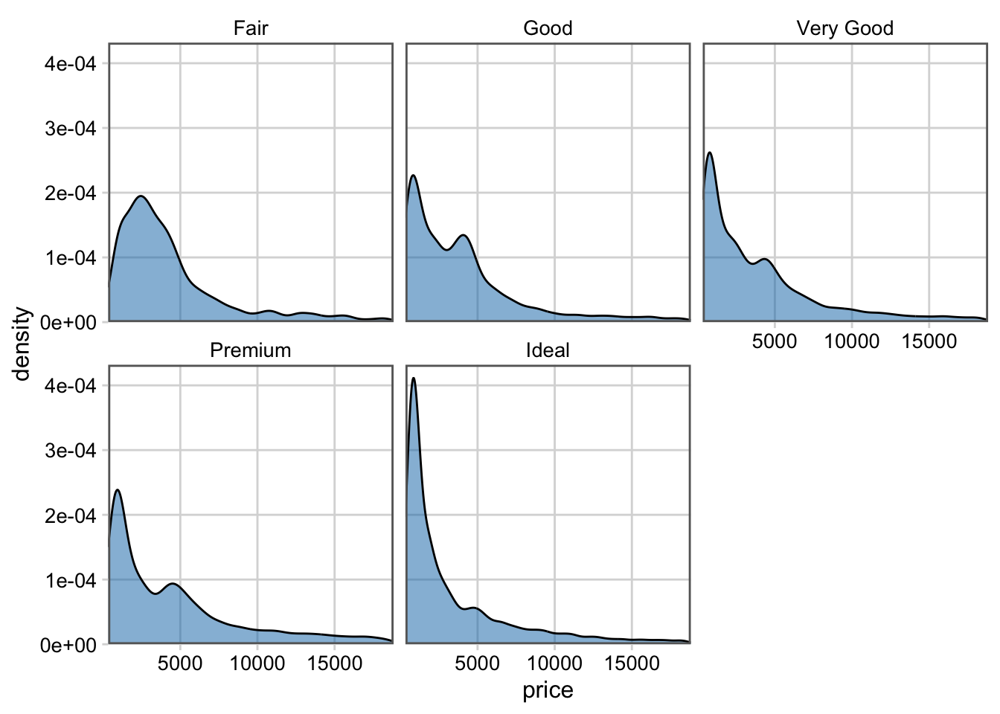
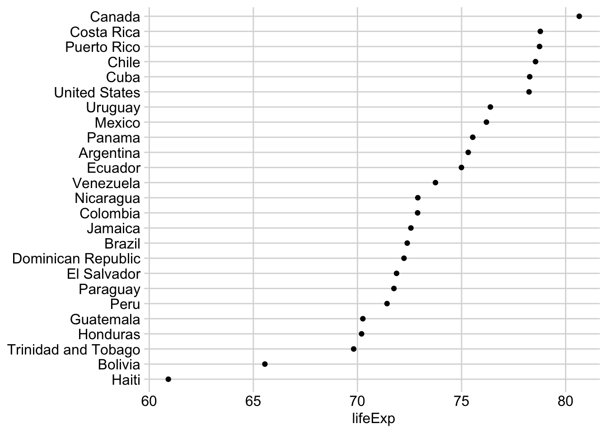
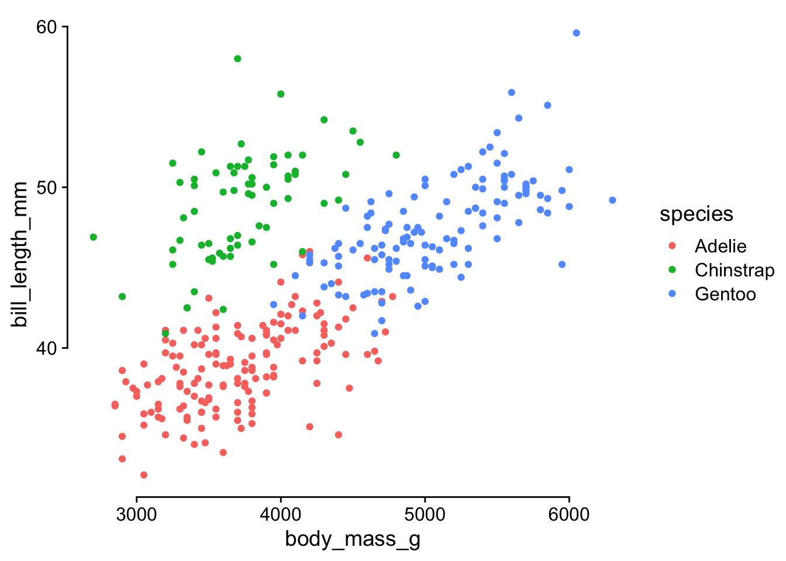
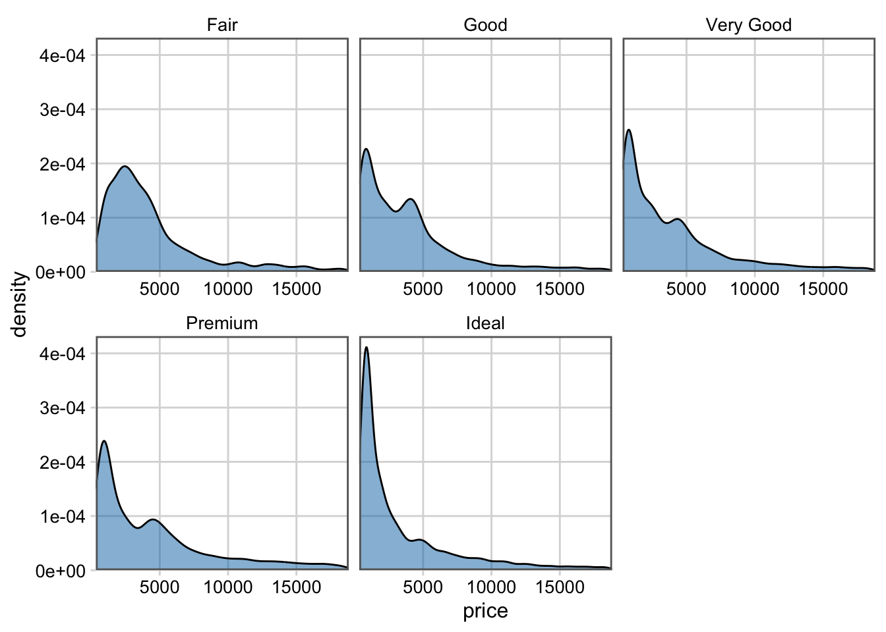
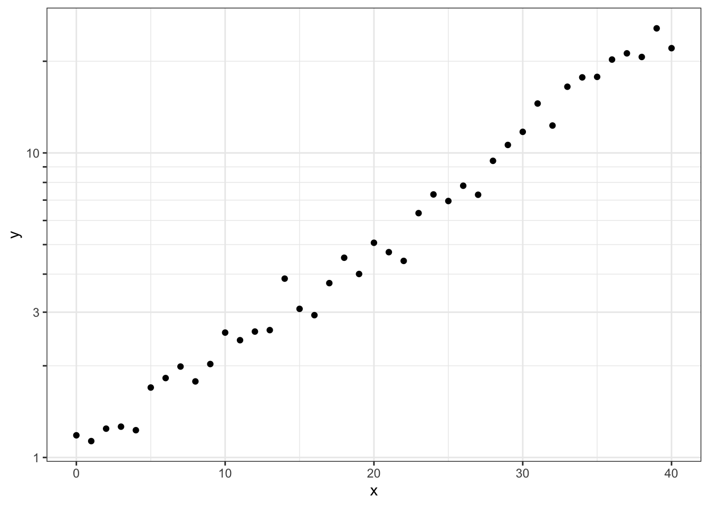

library(tidyverse)
library(cowplot)
ggplot(economics) +
aes(date, psavert) +
geom_line() +
scale_x_continuous(
expand = c(0, 0)
) +
theme_minimal_hgrid()
Plot design with themes and axes, solutions to exercises
Add appropriate themes and axis expansions to the following plots.
library(tidyverse)
library(cowplot)
ggplot(economics) +
aes(date, psavert) +
geom_line() +
scale_x_continuous(
expand = c(0, 0)
) +
theme_minimal_hgrid()
ggplot(diamonds, aes(price)) +
geom_density(fill = "#0072B280") +
facet_wrap(~cut) +
theme_minimal_grid(12) +
scale_x_continuous(
expand = c(0, 0)
) +
scale_y_continuous(
expand = expansion(mult = c(0, 0.05))
) +
panel_border("gray40")
library(gapminder)
gapminder |>
filter(
year == 2007,
continent == "Americas"
) |>
mutate(
country = fct_reorder(country, lifeExp)
) |>
ggplot(aes(lifeExp, country)) +
geom_point() +
scale_y_discrete(name = NULL) +
theme_minimal_grid(12, rel_small = 1)
ggplot(mtcars) +
aes(hp, mpg) +
geom_point() +
theme_half_open() +
background_grid()
Convert this plot to base-R style with capped axes.
library(palmerpenguins)
ggplot(penguins) +
aes(body_mass_g, bill_length_mm, color = species) +
geom_point(na.rm = TRUE) +
theme_half_open() +
guides(
x = guide_axis(cap = "both"),
y = guide_axis(cap = "both")
)
In a previous exercise you styled this plot. See if you can improve your design with the new axis options for faceted plots.
ggplot(diamonds, aes(price)) +
geom_density(fill = "#0072B280") +
facet_wrap(
~cut,
axes = "all_x"
) +
theme_minimal_grid(12) +
scale_x_continuous(
expand = c(0, 0)
) +
scale_y_continuous(
expand = expansion(mult = c(0, 0.05))
) +
panel_border("gray40")
Adjust the minor grid lines in this plot to match the log ticks.
# made-up data that follows exponential growth
exp_data <- tibble(x = 0:40) |>
mutate(
y = exp(0.08 * x + 0.1 * rnorm(length(x)))
)
ggplot(exp_data, aes(x, y)) +
geom_point() +
theme_bw() +
scale_y_log10(
# sometimes the simplest solution
# is a quick manual fix
minor_breaks = c(
.8, .9, 2, 4, 5, 6, 7, 8, 9, 20
),
guide = guide_axis_logticks(
# make major and minor ticks all the same length
long = 1,
mid = 1,
short = 1
)
)